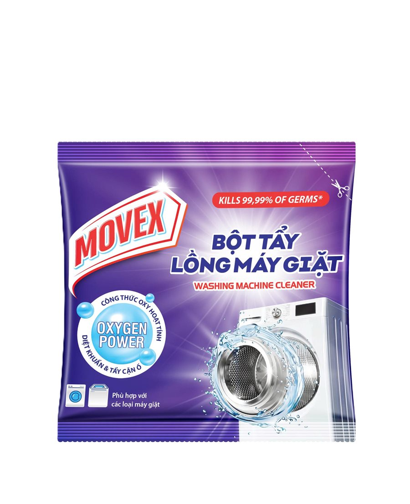

✦ Kills 99,99% of germs*
Bột Tẩy
Lồng Máy Giặt
Công thức Oxy hoạt tính — Oxygen Power: sục sâu vào từng khe lồng giặt, diệt khuẩn và đánh bay cặn ố tích tụ lâu ngày, trả lại lồng giặt sạch sáng như mới.
- Diệt 99,99% vi khuẩn*
- Tẩy sạch cặn ố, mảng bám, mùi hôi
- Phù hợp máy giặt cửa trước & cửa trên

Vì sao nên vệ sinh lồng giặt định kỳ?
Sau mỗi lần giặt, cặn bột giặt, xơ vải và nước cứng bám lại ở mặt sau lồng giặt — nơi tay không chạm tới. Lâu ngày chúng trở thành môi trường cho vi khuẩn và nấm mốc phát triển, khiến quần áo giặt xong vẫn có mùi ẩm và da dễ kích ứng. Vệ sinh lồng giặt định kỳ 2–3 tháng/lần giúp máy sạch, quần áo thơm và máy bền hơn.
💧 Oxygen Power
Công thức oxy hoạt tính sủi bọt mạnh, len lỏi vào khe kẽ lồng giặt mà không cần tháo máy.
🦠 Diệt khuẩn 99,99%*
Diệt vi khuẩn và nấm mốc tích tụ trong lồng giặt — nguyên nhân gây mùi hôi trên quần áo.
✨ Tẩy cặn ố
Đánh bay cặn bột giặt, mảng bám nước cứng và vết ố lâu ngày, lồng giặt sáng như mới.
🌀 Dùng cho mọi máy giặt
An toàn cho cả máy giặt cửa trước (lồng ngang) và cửa trên (lồng đứng), mọi thương hiệu.
Cách sử dụng
- Đổ trực tiếp gói bột Movex vào lồng giặt rỗng (không có quần áo).
- Chọn chế độ vệ sinh lồng giặt (Tub Clean / Drum Clean) hoặc chu trình giặt dài nhất với mực nước cao nhất.
- Để máy chạy hết chu trình — bọt oxy sẽ tự làm sạch và khử khuẩn toàn bộ lồng giặt.
* Chi tiết thành phần, liều lượng và lưu ý an toàn vui lòng xem trên bao bì sản phẩm.
Liên hệ & mua hàng
Movex là thương hiệu chăm sóc máy giặt của chúng tôi tại Việt Nam. Sản phẩm được phân phối qua gian hàng chính thức trên các sàn thương mại điện tử.
Hợp tác & hỗ trợ: tathehieu.hp@gmail.com